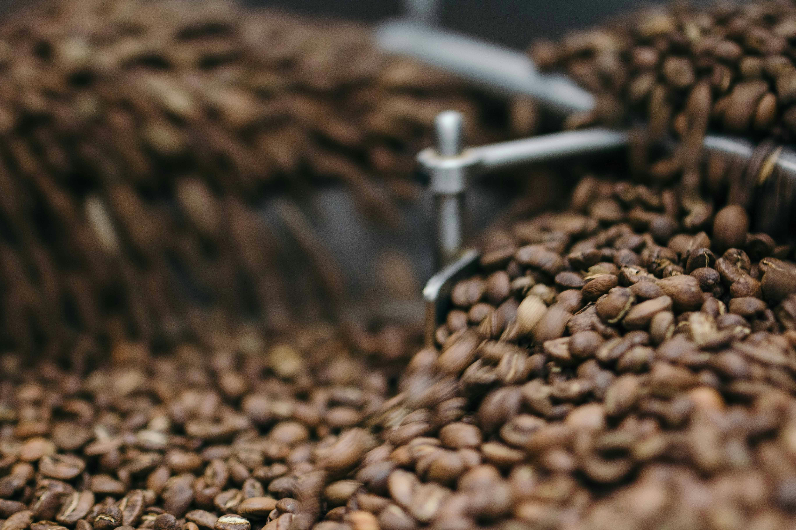

Benefícios do Café Artesanal
- Grãos selecionados manualmente
- Torra personalizada e recente
- Sabor mais encorpado e aromático
- Produção sustentável e local
Uma experiência além do sabor
O café artesanal é produzido em pequenas quantidades, com atenção especial à qualidade do grão, colheita e torra. Cada xícara carrega uma história, um cuidado e um sabor únicos.
Confira abaixo uma imagem do nosso processo de torrefação artesanal:
